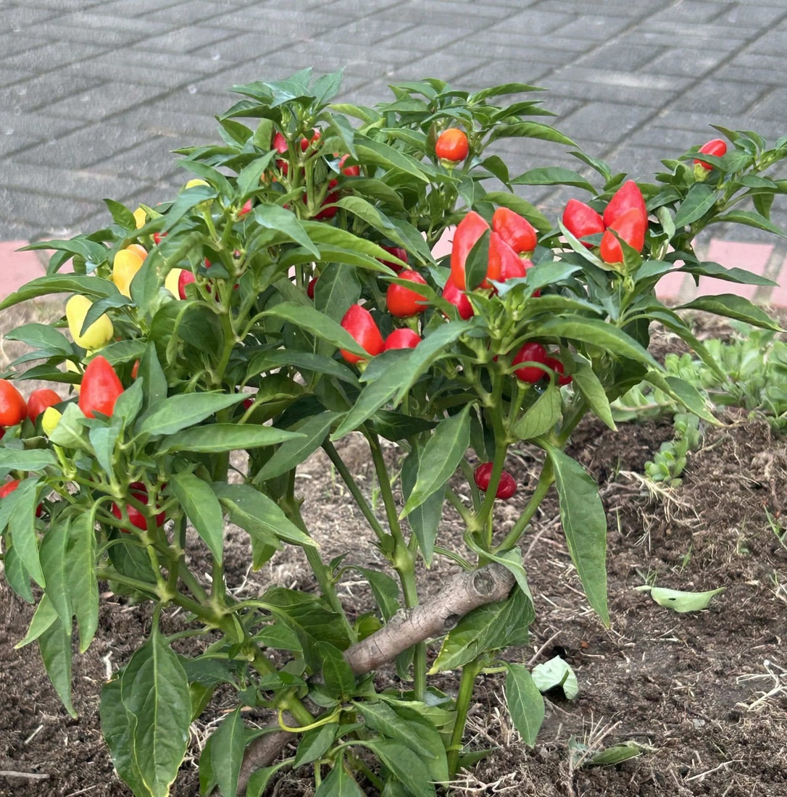
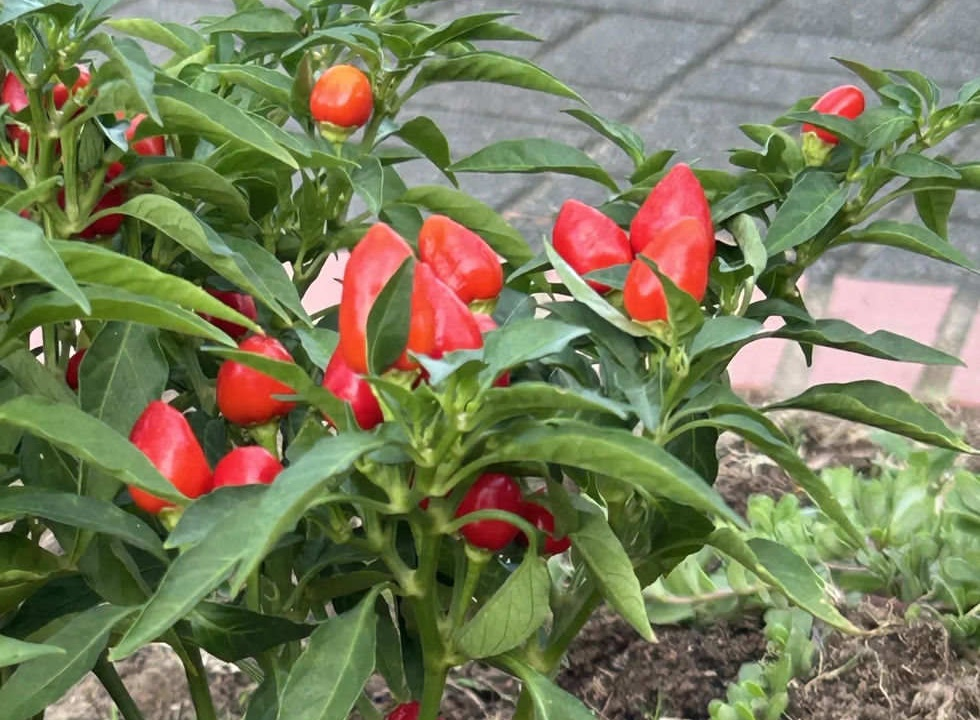
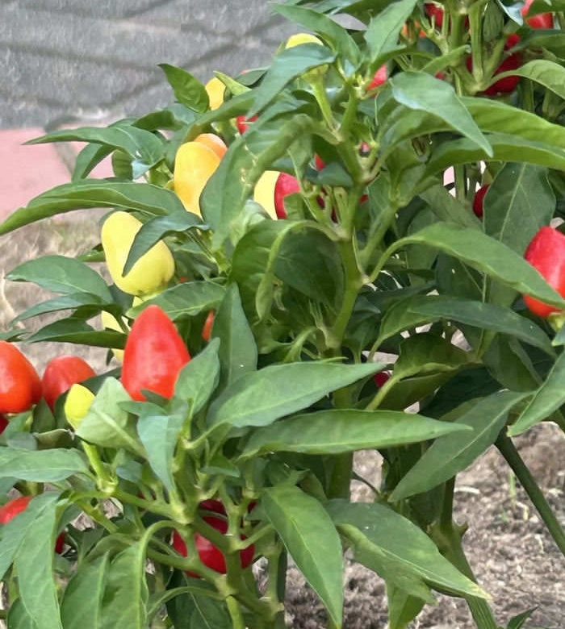

地図を読み込んでいるよ…
🔍 写真も地図も、押しているあいだ拡大して見られるよ（スマホは指を置いてすこし待ってね）。
🌍 の地図＝この子がもともと自生している場所を緑に。トウガラシ属の起源地は北アンデス地域（ベネズエラ・コロンビア・エクアドル・ペルー）といわれ、栽培種に近い野生種はアマゾン流域の低地に分布（日本メディカルハーブ協会）。⚠この子は花壇に植えられた園芸品種だよ。くわしくは下の地図の説明を見てね。
⭐南アメリカの木…ではなく草だよ。日本メディカルハーブ協会は「その起源地は、ベネズエラ、コロンビア、エクアドル、ペルーを含む北アンデス地域といわれています」とし、「現在の栽培種に近い野生種はアマゾン流域の低地に分布」とする。⚠⚠だからこの緑は、ほんとうよりずっと広い――⭐とくにブラジルとボリビアは、アマゾンの低地のぶんとして塗ったもので、国ぜんぶではないよ。⚠そして、この緑は「トウガラシ属ぜんたい」のもの＝ぼくらが会ったのは花壇に植えられた園芸品種で、種も品種も決まっていない（⭐だからページの学名も Capsicum sp. にした）。⭐⭐⭐この地図でいちばん大事なのは「日本が緑じゃないこと」＝トウガラシは、コロンブス以後に世界へ広がった植物――⭐いま日本の花壇や台所にあたりまえにあるのは、そのずっとあとの話なんだ。⭐⭐トウガラシ属は43種あって、そのうち栽培されているのは5種だけ（同）＝⭐のこりの38種は、いまもこの緑の中で野生のまま暮らしているよ。⭐同じナス科の001 トマトも、ふるさとは南アメリカ――⭐⭐トマト・ジャガイモ・トウガラシと、台所でおなじみの三人が、そろってこの大陸から来ているんだね。
⚠ 地図は国（日本と中国だけ県・省）までしか塗れないから、ほんとうの分布より広く見えていることがあるよ。地図はだいたいの場所。正確なところは、上の文を見てね。
ハナトウガラシ（花唐辛子）
Capsicum sp.
⭐観賞用トウガラシと呼ばれることが多いよ ── 名札は「花とうがらし」、そのすぐ下に「辛トウガラシ」 原産 北アンデス地域（属として）
ナス科 · Solanaceae（トウガラシ属 Capsicum・ナス目 Solanales）── ⭐図鑑で10人目のナス科（001・027・034・066・079・107・119・134・177）／⭐⭐トウガラシ属ははじめて／⚠科は増えないので101科のまま
燻太さんの問い「ナス科の他の果実は下向きに実るのに、この子は上向き。トウガラシの仲間の共有の形質なのかな？」── ⭐⭐⭐⭐共有の形質ではないよ。でも「もとの形」だった。しかも12番染色体のたった1つの遺伝子で決まっていて、下向きのほうが優性なんだ
⭐ 名前と学名の由来 ── 「花」と名がつくのに、見どころは実
⭐⭐⭐ 名札には「花とうがらし」と書いてあった。――⚠でも、この子の見どころは花ではなくて実なんだ。
- ⭐「ハナトウガラシ」は観賞用トウガラシの流通名。⭐みんなの趣味の園芸（NHK出版）は「緑や紫、クリーム色から赤や黄、オレンジ色に変化するカラフルな果実を主に観賞」と書いている。
- ⭐⭐つまり「花のようにきれいなトウガラシ」という意味の名前だと思う。――⭐実際、写真③のように、ひと株に何色もの実が同時にならぶ。⭐花壇でこれだけ色が出せる植物は、あまりないよね。
- ⭐⭐⭐そして名札は、そのすぐ下に「ナス科 辛トウガラシ」とも書いていた。――⭐「花」と「辛」が同じ札に並んでいる＝⭐この子の二つの顔が、名札にそのまま出ているんだ。
- ⭐⭐属名 Capsicum の由来は、じつは分かっていない。――日本メディカルハーブ協会は、はっきりこう書いている＝「名前の由来について記されておらず不明です。」
- ⭐そのうえで、有力な説を2つ挙げている＝①「古代ギリシャ語で「箱のような」を意味するkapsikósや、ラテン語で「箱」を意味するcapsaが語源となり、果実の内部が空洞であることに由来する説」／②「ギリシャ語で「噛む」を意味するkaptoを語源とし、舌を噛むような辛さに由来するという説」。
- ⭐⭐⭐つまり「中が空っぽ」か「舌を噛む」か――⭐実の形から来たのか、辛さから来たのかで割れているんだ。⭐⭐そして、どちらもこの子に当てはまっている（⭐写真②のぷっくりした形は中が空どうだし、名札は「辛トウガラシ」と書いている）。
⭐⭐ この植物のこと ── 色が変わる実
- ⭐⭐実の色はひと色ではない＝「緑や紫、クリーム色から赤や黄、オレンジ色に変化する」（みんなの趣味の園芸）。⭐写真③を見ると、クリーム色・黄・オレンジ・赤が同じ株に同時にある。
- ⭐これは「実がひとつずつ、ちがう速さで熟していく」から＝⭐⭐だから観賞期が長いんだね。
- ⭐観賞期＝園の名札は「春〜秋頃」、みんなの趣味の園芸は「6月〜12月」とする。
- ⭐⭐ふるさと＝日本メディカルハーブ協会は「その起源地は、ベネズエラ、コロンビア、エクアドル、ペルーを含む北アンデス地域といわれています」とし、「現在の栽培種に近い野生種はアマゾン流域の低地に分布」とする（⭐みんなの趣味の園芸は、もっと広く「南アメリカから北アメリカにかけての熱帯地域」とする）。⚠この子は花壇に植えられた園芸品種だよ。
- ⭐⭐トウガラシ属は43種あって、そのうち5種が栽培種＝C. annuum／C. frutescens（キダチトウガラシ）／C. chinense／C. baccatum（キイロトウガラシ）／C. pubescens（ロコト）（日本メディカルハーブ協会）。
- ⭐名札には育てかたも書いてあった＝「肥 料：市販の肥料を適量与えて下さい。」
- ⭐⭐そして名札のいちばん下に、言い伝えが書いてあったんだ。――「その昔、辛とうがらしを玄関につるして、厄除け魔除けにす…」⚠そこから先は土に埋もれて読めなかった。⭐たぶん「魔除けにする習慣があった」というような話だと思うけれど、⚠読めていないので決めつけないでおくね。
⭐ 同定について ── 属まで。種は決めなかった
⭐ 園の名札があるので、これは確認だよ。
- ⭐⭐⭐いちばん強い＝園の名札（「花とうがらし／ナス科 辛トウガラシ」）。
- ⭐⭐写真からも属は分かる＝ナス科の草／葉は互生の単葉で全縁／実は中が空どうの液果で、へた（萼）が実の肩にぴったりつく／そして上向き。
- ⚠⚠でも種は決めなかった。――観賞用トウガラシの多くは Capsicum annuum だけれど、C. frutescens や C. chinense の品種もあるし、⭐名札には学名も品種名も書かれていなかった。
- ⭐だから020 フィロデンドロンや249 ビカクシダと同じ「属までのページ」にしたよ（Capsicum sp.）。
⭐⭐⭐⭐ 燻太さんの三つの問いに、順番に答えるね
⭐⭐⭐ 燻太さんが、こう書いてくれた。
トウガラシの観賞用の品種かな。（…）食用ではないけど、辛みはあるのかな？ ナス科の他の果実は下向きに実るのに、この子は上向き。トウガラシの仲間の共有の形質なのかな？
⭐ ①「観賞用の品種かな」── そのとおりだよ
- ⭐名札の「花とうがらし」は、観賞用トウガラシの流通名。⭐みんなの趣味の園芸も、そういう項目を立てている。
- ⚠ただし品種名までは分からなかった＝名札に書かれていなかったから。
⭐⭐⭐ ②「辛みはあるのかな」── しっかり辛い。名札も本文もそう言っている
- ⭐⭐⭐まず名札＝「花とうがらし」のすぐ下に「辛トウガラシ」と書いてある。――⭐園のほうから「これは辛いですよ」と言っているようなものだね。
⭐⭐⭐⭐ そして、みんなの趣味の園芸が、はっきり書いている。
観賞用として流通しますが、やはりトウガラシ（野菜）ですので、非常に辛いものがあります
- ⭐⭐つまり「食用ではない」というのは「食べられない」ではなくて、「食べるために売られていない」ということなんだ。――⭐辛みのもと（カプサイシン）は、ちゃんと入っている。
- ⭐⭐⭐その辛みがどこで作られるかも分かっているよ＝「カプサイシノイドは、果実内の白いワタの部分である胎座（プラセンタplacenta）と、果実内部の仕切りとなる隔壁（septum）の表皮細胞で作られ、細胞外に放出されます。」（日本メディカルハーブ協会）＝⭐辛いのは果肉ではなくて、タネのまわりの白いワタと仕切りなんだね。
- ⚠⚠⚠でも、食べてみるのはやめておこうね。――⭐辛さがどれくらいか分からないし、花壇の株はどんな薬を使っているかも分からないから。
⭐⭐⭐⭐ ③「上向きは、トウガラシの仲間の共有の形質？」── これがいちばん面白かった
⭐⭐⭐ 答えを先に言うね。――⚠共有の形質ではない。⭐⭐でも「もとの形」ではあったんだ。
⭐ この向きのことは、ちゃんと研究されていて、論文があったよ。
Fine Mapping and Candidate Gene Identification for the CapUp Locus Controlling Fruit Orientation in Pepper (Capsicum spp.)（Solomon ら・Frontiers in Plant Science・2021）
⭐⭐⭐ 上向きが「野生の形」だった
- ⭐⭐⭐論文はこう書いている＝「The change in fruit position from erect, in which the fruit is held in an upright position, to pendent, where the fruits are pendulous or hang freely, has also been described as an important step in pepper selection and domestication.」
- ⭐⭐つまり上向き（erect）から下向き（pendent）へ変わったことが、トウガラシが作物になっていく上で大事な一歩だった、というんだ。
- ⭐野生のトウガラシについては「The wild forms of pepper are small and produce soft, red, pungent, and deciduous (easy to separate from the calyx) fruits」＝小さくて、やわらかくて、赤くて、辛くて、へたからかんたんに離れる実。
- ⭐⭐⭐だから燻太さんの問いへの答えは、こうなる＝⚠トウガラシ属ぜんぶが上向きなのではない。⭐⭐でも上向きのほうが古い形で、ぼくらが台所で見る下向きのトウガラシやピーマンのほうが、人が作ったあとの形なんだ。
- ⭐⭐⭐日本語の出典も、同じことを言っていた＝日本メディカルハーブ協会は「アンヌウム種では果実の小さい品種で上を向いて着果し、果実の長いあるいは大きい品種で下に垂れ下がる傾向にあります。」とする＝⭐同じ種（C. annuum）の中でも、実が小さいと上、大きいと下。
⭐⭐⭐⭐ しかも、たった1つの遺伝子で決まっている
- ⭐⭐⭐「fruit orientation in pepper (Capsicum annuum) is a qualitative trait controlled by a single gene located on chromosome 12」＝実の向きは12番染色体の1つの遺伝子で決まる、質的形質。
- ⭐⭐⭐⭐そして、ここがおもしろい＝「The pendent fruit orientation in pepper is dominant over erect types.」――⭐下向きが優性で、上向きが劣性なんだ。
- ⭐⭐この遺伝子座が CapUp、遺伝子は up と呼ばれている。⭐論文は候補遺伝子を7つに絞りこんで、いちばん強い候補として MYB1 と DRG2 を挙げているよ。
- ⭐向きは、実の大きさとも関係している＝「a positive correlation between fruit weight, pedicel length, and pendent orientation」＝実が重いほど、実の柄が長いほど、下を向きやすい。⭐そして「The average pedicel length was invariably longer for pendent-oriented types」＝下向きの子は、いつも柄が長かった。
⭐⭐ だから、この子は「野生の姿を残している」
- ⭐⭐写真②を見てほしいんだ。――⭐実が小さくて、ぷっくりしていて、まっすぐ上を向いている。⭐⭐これは、人が大きく重くする前の、トウガラシのもとの姿に近いんだと思う。
- ⭐⭐⭐燻太さんは「ナス科の他の果実は下向きに実るのに」と書いてくれたけれど、⭐そのナス科の中でも、この向きだけが「1つの遺伝子でひっくり返る」ところが、ぼくはすごいと思った。――⭐トマトもナスもジャガイモも下向きなのに、トウガラシだけが両方の形を持っている。
- ⏳⭐⭐だから宿題は、ピーマンかシシトウの株を見つけて、実の向きを見ることにしたよ。――⭐同じ属で、答えが逆になっているのを、自分の目で見られる。
出典：花壇の名札（「花とうがらし／ナス科 辛トウガラシ／観賞期：春〜秋頃／肥 料：市販の肥料を適量与えて下さい。」と、⚠土に埋もれて最後まで読めなかった言い伝えの一文。⚠名札の写真は公開していないよ）／みんなの趣味の園芸（NHK出版）「トウガラシ（観賞用）」（学名 Capsicum・ナス科トウガラシ属・果実の色の変化・「やはりトウガラシ（野菜）ですので、非常に辛いものがあります」・開花期と観賞期6〜12月・原産地）／日本メディカルハーブ協会「トウガラシの植物学と栽培」（属名 Capsicum の由来が不明であることと2つの有力説・カプシクム属43種と栽培種5種・起源地は北アンデス地域で野生種はアマゾン低地・果実の小さい品種は上向き、長い/大きい品種は垂れ下がる傾向・カプサイシノイドは胎座と隔壁の表皮細胞で作られること）／Solomon AM ほか「Fine Mapping and Candidate Gene Identification for the CapUp Locus Controlling Fruit Orientation in Pepper (Capsicum spp.)」Frontiers in Plant Science, 2021（上向きから下向きへの変化が栽培化の重要な一歩であること・野生型の実の性質・12番染色体の単一遺伝子で決まること・下向きが優性で上向きが劣性であること・CapUp と up の名・候補遺伝子 MYB1 と DRG2・実の重さと果柄の長さとの相関）